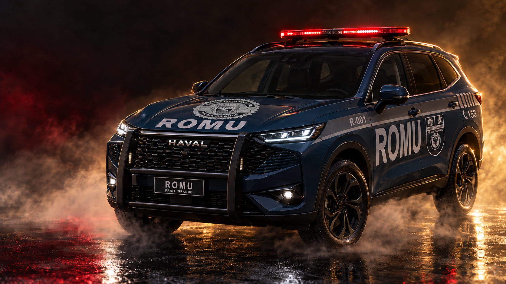
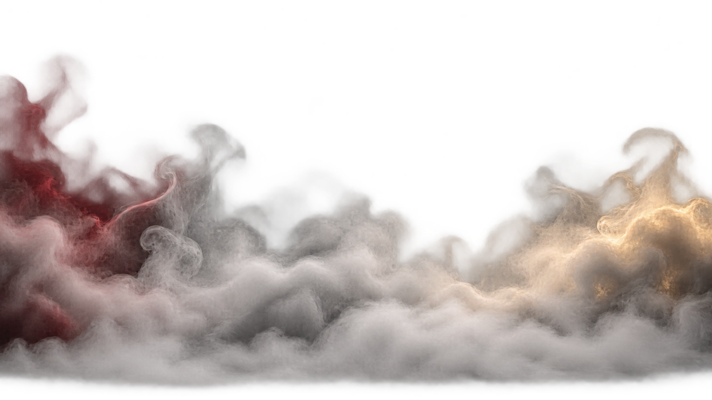
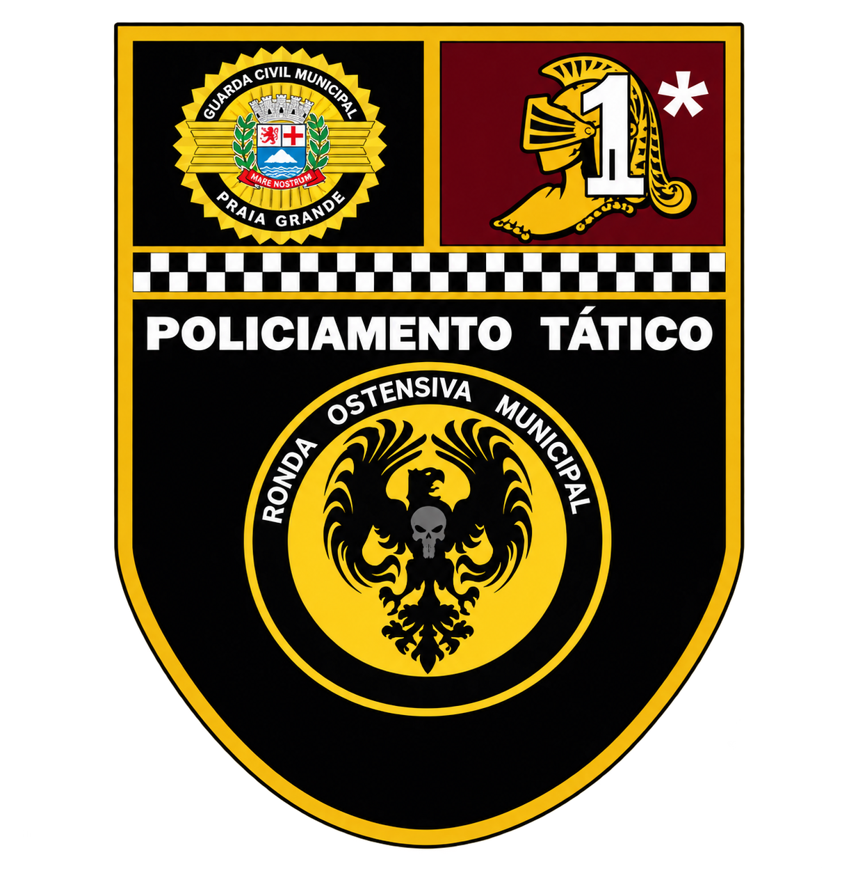

1969
Origem da estrutura municipal
O Serviço de Vigilância e Salva-Vidas marca o início da estrutura que daria origem à Guarda Civil Municipal.



Uma nova presença nas ruas, integrada à trajetória de preparo, disciplina e serviço do grupamento.
A história do grupamento nasce dentro da evolução da segurança municipal de Praia Grande. A atual identidade da ROMU resulta de um processo de estruturação, treinamento e especialização construído ao longo de décadas.
O Serviço de Vigilância e Salva-Vidas marca o início da estrutura que daria origem à Guarda Civil Municipal.
O Município cria o ROPAM, Ronda Ostensiva de Proteção e Auxílio Municipal.
A GCM forma uma equipe para responder a situações de desordem pública que exigiam capacidade operacional diferenciada.
Em 28 de junho, o grupamento recebe oficialmente a denominação Rondas Ostensivas Municipais.
Controle a câmera com precisão e observe o conjunto em uma rotação cinematográfica contínua.
A ROMU atua como grupamento tático especializado da Guarda Civil Municipal, em apoio ao policiamento setorial e às demais equipes municipais.
Marcos públicos da evolução da segurança municipal de Praia Grande e da formação do grupamento especializado.
Da Equipe Tática de 2012 à identidade consolidada da ROMU.